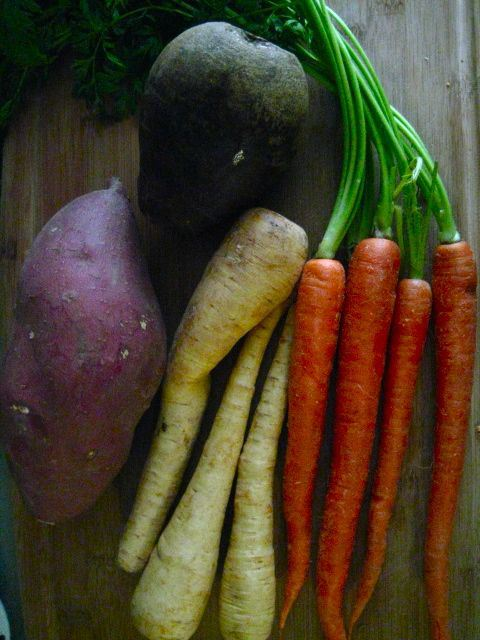
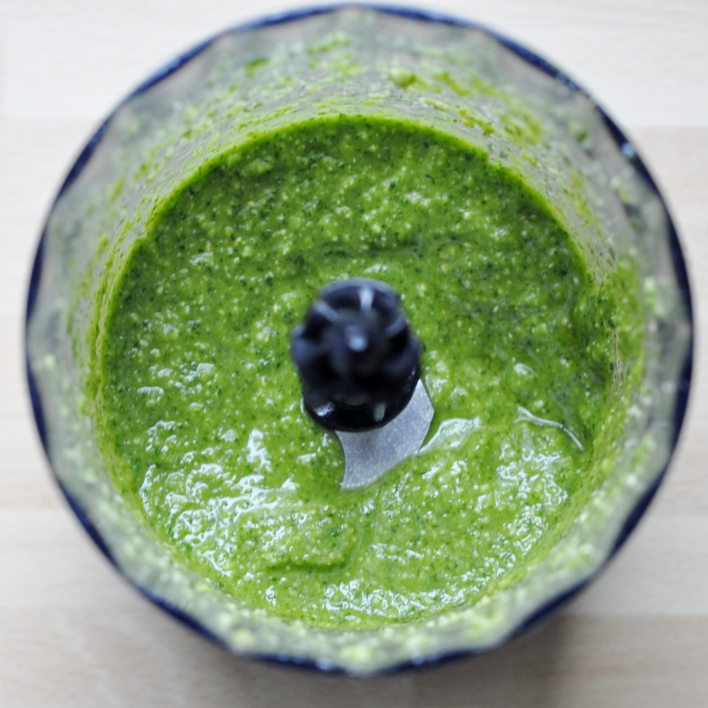
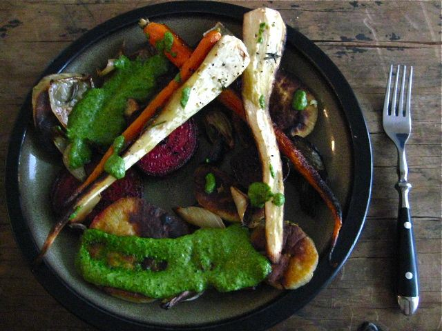

Peel the vegetables and cut the beet and yam into 3/4 in slices.
Quarter the onion and pull it apart a little.
With the flat side of a large cutting knife, smash the garlic against your cutting board.
Place everything on 2 baking pans covered in parchment, making sure nothing is overlapping.
Drizzle in olive oil and sprinkle the rosemary leaves (throw out the woody stems!). Roast for 1 hour, rotating them halfway through.

For the Pesto:
While the vegetables are roasting, mix all ingredients in a blender or food processor until relatively smooth.
Add salt and pepper to taste. Adjust to your preferences! I found this amount was good but I added a little more lemon to mine because... I really like lemon!

Throw vegetables on a plate, and toss some pesto on!
